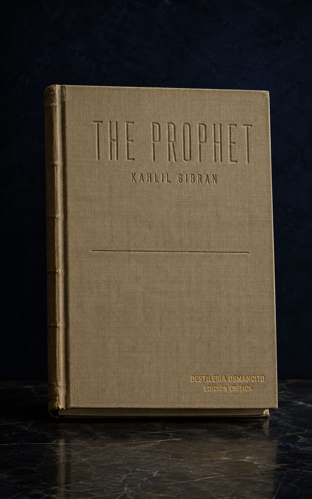
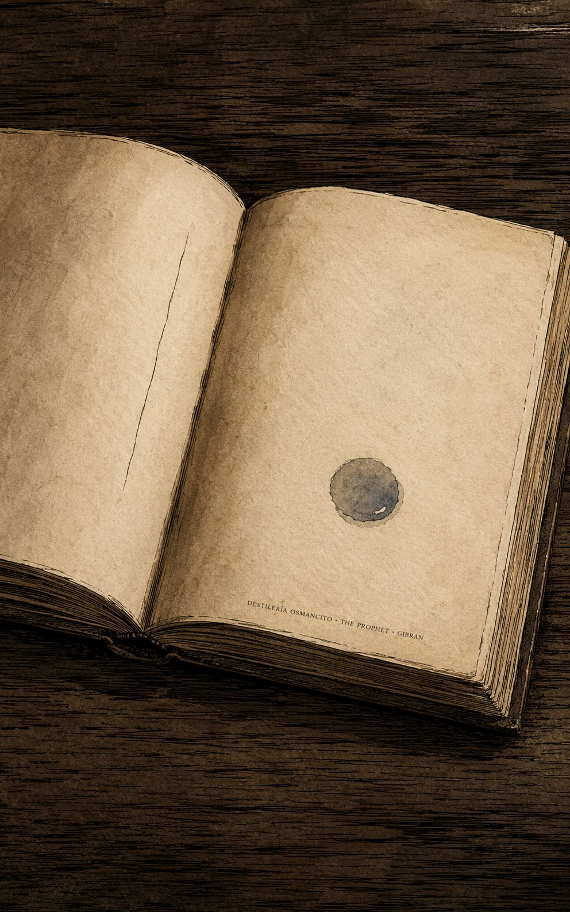
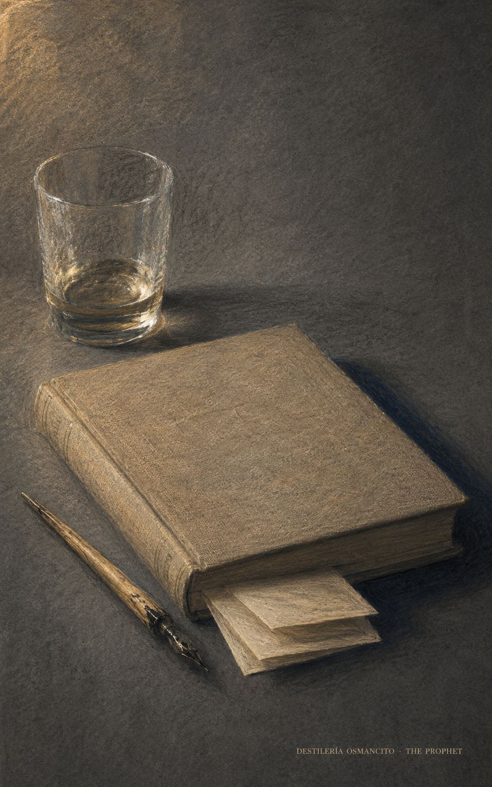
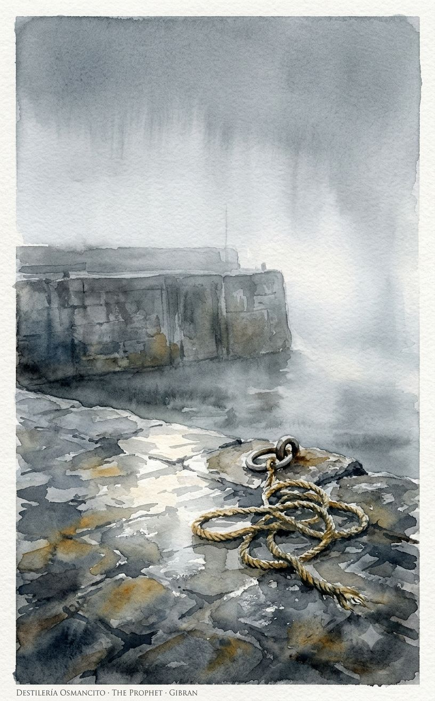
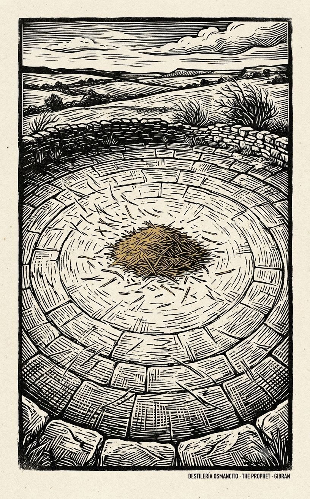
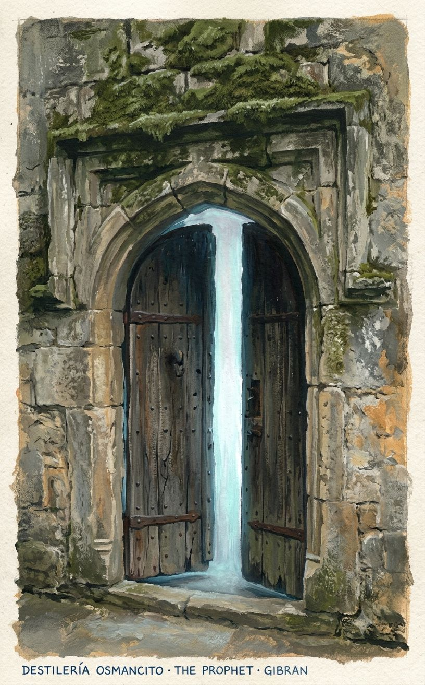
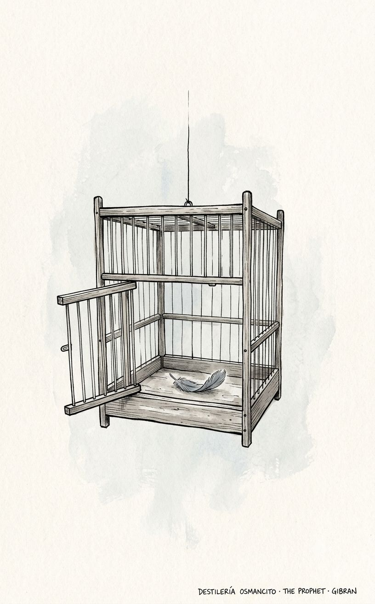

Lo que el corpus irradia antes de ser pensado es esto: levedad con peso. Un libro que se sostiene en las manos como si fuera poco y sin embargo tarda en soltarse. Su temperatura es la del amanecer justo antes de que el sol suba —todavía fresco, ya luminoso, con algo que va a ocurrir y todavía no ocurrió. Su ritmo es el de quien habla despacio porque sabe que es la última vez. La resistencia que ofrece es nula: se abre sin esfuerzo, casi sin friccción. Eso es también su peligro: parece fácil de recibir y es difícil de sostener. Lo que permanece después de cerrarlo no es una idea sino una temperatura —la de algo que partió y prometió volver.







Un libro delgado que pesa más de lo que mide.
El corpus finge ser un libro de sabiduría. Lo que hace en realidad es más extraño: convierte cada pregunta humana ordinaria —sobre el trabajo, el matrimonio, la muerte— en un espejo que devuelve al preguntante amplificado. El profeta no enseña: revela que quien pregunta ya sabe. La paradoja que lo mueve todo es ésta: un texto sobre la unidad que opera mediante la separación perpetua —de los amantes, de los hijos, del maestro de su ciudad, del alma de sus propios límites. Todo lo que toca, lo suelta.
No es un tratado ni un poema ni una novela. Es un dispositivo: construido para que la sabiduría parezca recordada, no aprendida. Su forma —el profeta que parte, el pueblo que pregunta, la voz que responde desde una altura que no se explica— instala en el lector una postura de recepción antes de que comience la primera palabra sobre el amor o el trabajo o la muerte. Nombrar lo que es este corpus es distinto de resumir lo que dice: es una máquina para producir reconocimiento.
Título — The Prophet
Autor — Kahlil Gibran
Año — 1923
Género — Prosa poética / libro de sabiduría
Extensión estimada — aproximadamente 12.490 palabras · 50 páginas · 28 secciones (prólogo narrativo, 26 discursos temáticos, epílogo)
Idioma original — Inglés
Palabra más frecuente con contenido — heart (52 ocurrencias). El corpus se declara libro sobre la vida humana en su conjunto; que la palabra más frecuente no sea God, life ni soul —presentes pero secundarias— sino heart, revela dónde localiza Gibran el sitio del conocimiento verdadero: no en la razón ni en lo divino, sino en el órgano que siente antes de entender.
Almustafa, profeta que ha vivido doce años en la ciudad de Orphalese, ve llegar el barco que lo devolverá a su tierra natal. Antes de partir, los habitantes lo rodean y le piden que hable. Lo que sigue son veintiséis discursos sobre los grandes temas de la existencia —el amor, el trabajo, el matrimonio, los hijos, la libertad, la muerte— hasta que el profeta aborda el barco y desaparece en la niebla. El corpus termina con Almitra, la única que permanece en el muelle mirando el mar.
Almustafa — el profeta, voz central; sabio que habla pero que constantemente insiste en que no enseña sino que devuelve a cada uno lo que ya sabe.
Almitra — la seeress, primera creyente; hace las preguntas más importantes y es la última figura visible al final.
El pueblo de Orphalese — colectivo sin individualidad; cada preguntante representa una función humana (la madre, el labrador, el orador, el sacerdote).
El libro tiene una estructura de marco narrativo que encierra una serie de sermones en prosa poética. En el prólogo, Almustafa lleva doce años esperando su barco en Orphalese; cuando lo ve llegar, siente simultáneamente alegría y dolor por la separación inminente. Al bajar al puerto, el pueblo lo intercepta y Almitra le pide que, antes de partir, les dé su verdad para transmitirla a sus hijos. Almustafa acepta.
Los veintiséis discursos cubren, en este orden: amor, matrimonio, hijos, dar, comer y beber, trabajo, alegría y pena, casas, ropa, comprar y vender, crimen y castigo, leyes, libertad, razón y pasión, dolor, autoconocimiento, enseñanza, amistad, hablar, tiempo, bien y mal, oración, placer, belleza, religión, y muerte. Cada discurso sigue la misma estructura: un habitante nombrado por función hace una pregunta; el profeta responde con prosa rítmica que despliega una paradoja o una inversión del sentido común.
En cada tema, el movimiento argumentativo es el mismo: Gibran toma una distinción que la cultura establece como oposición —razón vs. pasión, alegría vs. dolor, bien vs. mal, libertad vs. esclavitud— y la disuelve mostrando que los dos términos son inseparables, o que el que parece negativo es condición del positivo. El amor crucifica tanto como corona. El dolor carva el espacio que contendrá la alegría. El mal no existe como fuerza autónoma sino como bien hambriento. La libertad buscada como meta se convierte en su propia cadena.
El epílogo retoma la narración: Almustafa sube al barco y pronuncia un discurso final en el que revela que vino a aprender de ellos, no a enseñarles, y que regresará. El barco parte hacia el este. Solo Almitra permanece en el muelle.
Lo que el corpus produce antes de ser pensado es una sensación de elevación sin esfuerzo —como si la gravedad hubiera disminuido levemente. Eso es un logro técnico considerable y también su límite más visible: el texto nunca roza la resistencia, nunca encuentra una pregunta que lo detenga. Todo se resuelve hacia arriba. El dolor se vuelve espacio para la alegría; la muerte, una forma de danza; la esclavitud, una libertad mal comprendida. El resultado es hermoso y, en cierta medida, anestésico. Lo que permanece después de cerrarlo no es una idea sino una temperatura.
La primera: el profeta que insiste en que no enseña —“¿fui yo quien habló? ¿no fui también un oyente?”— pero ocupa durante todo el libro la posición del que sabe y es interrogado. La humildad es su retórica más poderosa.
La segunda: el corpus proclama la unidad de todos los opuestos pero opera estructuralmente mediante la separación. Almustafa debe irse para haber llegado. El maestro debe distanciarse para ver. Los amantes deben mantener espacios entre ellos. Los hijos pertenecen al futuro, no a sus padres. La forma del libro contradice silenciosamente su doctrina: la unión solo se enuncia desde la partida.
La tercera: un texto escrito en inglés por un inmigrante libanés en Nueva York, impregnado de sufismo, neoplatonismo y romanticismo americano, que se presenta sin marca de origen cultural —como si la sabiduría fuera de nadie y de todos. Esa borradura no es inocente; es precisamente lo que le permitió convertirse en uno de los libros más vendidos del siglo XX.
Los capítulos más breves son los más ricos. La mayoría de los discursos de Almustafa trabajan una sola inversión —toman lo que el oyente espera y lo voltean— y cuando lo logran en pocas líneas, la tensión cristaliza. Cuando se extienden, se diluyen. Las joyas auténticas del corpus no están donde la sabiduría se declara más alto, sino donde el lenguaje hace algo que no anuncia: construir con la mano derecha y demoler con la izquierda en la misma oración.
La piel que se arranca La tensión se abre en la cima del cerro: Almustafa ve su barco y siente alegría, pero al bajar la colina la alegría se convierte en herida. Lo que debería ser liberación —el regreso— es presentado como amputación. El movimiento viaja desde el júbilo hacia el dolor sin escala en la ambivalencia; no hay duda, solo la coexistencia de los dos estados con la misma intensidad. Cierra en una declaración de imposibilidad: no puede llevarse nada, pero tampoco puede dejar nada. La tensión queda suspendida. Laceración.
El pueblo que llega cuando ya es tarde La tensión se abre con la imagen del pueblo corriendo desde los campos al enterarse de que el barco ha llegado —pero ese barco es el que lo lleva, no el que lo trae. Congregarse para despedir y congregarse para recibir son el mismo gesto; el corpus lo señala como paradoja sin resolver. La tensión viaja a través del silencio del profeta ante las súplicas, y cierra en las lágrimas que caen sobre su pecho sin respuesta verbal. Duelo anticipado.
Lo que el amor no sabe de sí mismo Un sacerdote dice: “Y siempre ha sido así: el amor no conoce su propia profundidad hasta la hora de la separación.” La tensión se abre como observación general y cierra como acusación velada al texto entero: si el amor solo se conoce en la pérdida, todo el libro que sigue —un libro sobre el amor— fue posible únicamente porque Almustafa se va. El movimiento es brevísimo pero produce una ironía estructural que el corpus no explota. Tensión abierta. Ironía callada.
Veredicto del capítulo: capítulo que instala. No argumenta —construye la cámara de resonancia donde todo lo que sigue adquiere su peso.
La piel que se arranca — No un abrigo
Partir no es quitarse una prenda. Es arrancarse la piel con las propias manos. La diferencia es que la prenda se pone y se quita sin daño; la piel creció ahí, es el lugar donde termina el adentro y empieza el afuera. Quien se la arranca no está siendo dramático: está describiendo con precisión lo que ocurre cuando uno ha vivido en un lugar el tiempo suficiente para volverse parte de él. Lo que queda detrás no es un recuerdo sino una herida abierta en el paisaje.
La piel que se arranca — La voz sin labios
Una voz no puede llevarse los labios y la lengua que le dieron alas. Debe buscar el éter sola. La imagen trabaja en dos direcciones simultáneas: describe la imposibilidad de llevarse un lugar consigo y, al mismo tiempo, la naturaleza del lenguaje —que una vez dicho, la voz existe aparte de quien la dijo. El corpus entero es esa voz: ya separada de quien la pronunció antes de que el libro empiece.
El amor como proceso agrario La tensión se abre con una inversión de expectativa: el amor se anuncia no como dulzura sino como peligro. Viaja a través de una serie de verbos de violencia creciente —corona, crucifica, sube, baja, recoge, trilla, cierne, muele, amasa— que construyen la imagen del amor como molinero o panadero. Cierra en la imagen del pan sagrado: el amado reducido a harina, al fuego, luego al pan que alimenta a Dios. La temperatura sube y no baja. Violencia sagrada.
El amor como suficiencia La tensión se abre con una declaración paradójica —el amor no da nada excepto a sí mismo, no toma nada excepto de sí mismo— y viaja hacia su implicación: el amor no necesita ni al amante ni al amado para completarse. Cierra en la inversión de la fórmula religiosa: no “Dios está en mi corazón” sino “yo estoy en el corazón de Dios.” El movimiento es breve y geométricamente preciso. Clausura.
Veredicto del capítulo: capítulo de alta densidad argumental que sostiene dos movimientos simultáneos y distintos, el segundo más económico y más exacto que el primero.
El amor como proceso agrario — El mundo sin amor a medias
Quien huye del amor para evitar el dolor entra en un mundo donde puede reír, pero no con toda su risa, y llorar, pero no con todas sus lágrimas. La imagen trabaja porque no dice que quien huye del amor no siente nada —dice que siente todo a mitad de intensidad. Es un mundo funcional y exactamente insoportable: no la ausencia de emoción sino la emoción reducida a su versión administrada.
El amor como suficiencia — Quién dirige a quién
No puedes dirigir el curso del amor. El amor, si te encuentra digno, dirige el tuyo. La inversión es total y tiene dientes: quien ama no conduce sino que es conducido, y la condición para ser conducido es ser encontrado digno por aquello que ya no controlas. El pasaje funciona sin contexto porque replica una experiencia reconocible —la sensación de que el amor nos eligió, no al revés— y le da forma de consecuencia lógica, no de sentimiento.
La paradoja de la unión La tensión se abre afirmando que los cónyuges están unidos para siempre —nacieron juntos, morirán juntos, permanecerán juntos incluso en la memoria silenciosa de Dios. Luego el movimiento gira de inmediato: pero que haya espacios en esa unión. La trayectoria es una serie de instrucciones que reformulan la misma contradicción: dar el corazón pero no ponerlo en custodia del otro, cantar juntos pero permanecer solos, pararse juntos pero no demasiado cerca. Cierra en la imagen de los pilares del templo, que sostienen la misma estructura precisamente porque no se tocan. Tensión arquitectónica.
Veredicto del capítulo: capítulo que trabaja una sola paradoja con variaciones. Económico. No excede su materia.
La paradoja de la unión — Los pilares del templo
Dos personas que se aman demasiado cerca se hacen sombra la una a la otra. El roble y el ciprés no crecen en la sombra del otro. Los pilares del templo sostienen el mismo techo precisamente porque están separados: si se unieran, el techo caería. La imagen hace lo que el argumento no puede hacer solo: convierte la distancia en condición estructural de la unión, no en su amenaza.
La flecha y el arco La tensión se abre con una afirmación que contradice el instinto parental más básico: los hijos no son de sus padres. Viaja a través de una acumulación de lo que los padres no pueden dar —pensamientos, almas, el futuro— hasta que el movimiento gira hacia lo que sí son: los arcos desde los cuales la vida dispara sus flechas. El cierre traslada la dignidad del padre desde la posesión hacia la estabilidad: el arco es honrado no porque sea la flecha, sino porque es estable mientras la flecha vuela. Renuncia.
Veredicto del capítulo: el más logrado de los breves. Una sola imagen que llega y no excede su arribo.
La flecha y el arco — El arco que se dobla con alegría
Los hijos viven en la casa del mañana, que sus padres no pueden visitar ni en sueños. La frase es brutal en su precisión: no dice que el futuro de los hijos sea incierto o diferente —dice que está literalmente fuera del alcance perceptual de los padres. No como fracaso sino como hecho. Y entonces propone algo extraño: que el padre se esfuerce en parecerse al hijo, no al revés, porque la vida no retrocede ni se detiene en el ayer. El pasaje reconoce algo que la mayoría de los discursos sobre la infancia evitan: que los hijos son el futuro y los padres son el pasado, y que eso no se puede negociar.
El miedo disfrazado de prudencia La tensión se abre atacando la idea de que guardar posesiones es precaución. El movimiento reformula el miedo de quedarse sin como la sed más profunda: el que teme la sed cuando el pozo está lleno ya está sediento de una sed que no se puede saciar con agua. La trayectoria escala desde la crítica del dar por reconocimiento hasta la clasificación de quienes dan sin saberlo, que son los más altos. Cierra en una inversión del agradecimiento: la gratitud excesiva es una carga para quien recibe y para quien da. Paradoja económica.
El que recibe también da La tensión se abre tarde en el capítulo, casi como nota al pie: el verdadero dar no es el gesto del donante sino el coraje del receptor. Quien recibe con gracia libera al donante de su propia generosidad. La trayectoria es brevísima. Cierra en una imagen de vuelo: el receptor que sube en las alas del regalo como si subiera en las alas del que da. Inversión silenciosa.
Veredicto del capítulo: capítulo que construye con demasiadas variaciones y cristaliza en dos momentos que son los únicos que necesitaba.
El miedo disfrazado de prudencia — El perro que entierra huesos
¿Qué traerá el mañana al perro demasiado prudente que entierra huesos en la arena sin huella, siguiendo a los peregrinos hacia la ciudad santa? La imagen tiene el tono exacto del absurdo: un perro en peregrinación, enterrando huesos en arena donde no se pueden encontrar, por miedo a necesitarlos después. Es una imagen cómica y exacta del tipo de precaución que se consume a sí misma. Funciona sin contexto porque replica una conducta reconocible y la muestra desde fuera, con la distancia justa.
El miedo disfrazado de prudencia — La sed que no tiene fondo
¿Qué es el miedo a la necesidad sino la necesidad misma? ¿No es la sed de agua cuando el pozo está lleno la sed que no se puede saciar? La pregunta retórica contiene una trampa: el miedo al futuro no es precaución sino el padecimiento anticipado de lo que aún no ocurre. Quien tiene miedo de quedarse sin ya está sin. El pasaje es tan breve que parece aforístico, pero tiene estructura argumental completa: premisa, consecuencia, imagen.
El sacrificio como sacramento La tensión se abre con un deseo imposible: ojalá pudiéramos vivir de la fragancia de la tierra y de la luz, sin matar. Pero como no podemos, que el acto de matar sea adoración. El movimiento viaja a través de tres momentos estacionales —la bestia sacrificada, la manzana mordida, la uva prensada— y construye una liturgia del consumo. Cierra con la imagen del vino guardado en vasijas eternas: el cuerpo humano como vid, la muerte como vendimia. Liturgia.
Veredicto del capítulo: capítulo ritual. No argumenta —celebra. Sus pasajes son hermosos pero dependen del ritmo acumulativo; ninguno sobrevive del todo solo.
El sacrificio como sacramento — La misma ley
Al matar una bestia, decirle en el corazón: por el mismo poder que te mata, yo también soy matado; y también seré consumido. Porque la ley que te entregó a mi mano me entregará a una mano más poderosa. Tu sangre y la mía no son más que la savia que alimenta el árbol del cielo. El pasaje desactiva la jerarquía entre quien mata y quien muere: los coloca en la misma cadena trófica cósmica. No como consuelto —como hecho. La brutalidad y la sacralidad ocupan el mismo espacio sin que ninguna anule a la otra.
El trabajo como amor encarnado La tensión se abre con una afirmación cosmológica: trabajar es mantenerse al ritmo de la tierra. El movimiento viaja a través de una escala ascendente —urge, conocimiento, trabajo, amor— donde cada eslabón es condición del siguiente. Cierra en una declaración que condensa todo el argumento en cuatro palabras. Síntesis.
La jerarquía del arte La tensión se abre con una creencia popular implícita: el escultor es más que el labrador, el pintor más que el zapatero. El movimiento la desmonta: el viento no habla más dulcemente al roble que a la menor brizna de hierba. Cierra señalando que el único grande es quien convierte la voz del viento en canción más dulce por su propio amor —sin importar el material. Nivelación.
Veredicto del capítulo: capítulo que trabaja dos movimientos complementarios y cristaliza en dos joyas de naturaleza distinta.
El trabajo como amor encarnado — Cuatro palabras
El trabajo es amor hecho visible. Cuatro palabras que funcionan como ecuación: el amor, que es invisible e interior, se vuelve perceptible a través del trabajo. No dice que el trabajo produce amor, ni que el amor produce trabajo —dice que son la misma cosa en estados distintos de materialización. La brevedad es la joya: el corpus pasa varias páginas construyendo el argumento y luego lo entrega en una línea que podría haber existido sin el resto.
El trabajo como amor encarnado — El pan amargo
Quien cuece el pan con indiferencia cuece un pan amargo que alimenta solo la mitad del hambre del hombre. Quien maldice el prensado de las uvas destila veneno en el vino. Quien canta como ángel pero no ama el canto ensordece los oídos de los hombres a las voces del día y de la noche. Las tres imágenes trabajan en cadena: el pan amargo, el vino envenenado, el canto que ensordece. Cada una toma un acto de producción y muestra cómo la ausencia de amor en el hacedor adultera el producto —no metafóricamente sino literalmente. El pan sabe distinto. El vino es veneno. El canto daña.
El mismo pozo La tensión se abre con una ecuación que niega la distinción que el oyente espera defender: la alegría es el dolor sin máscara. El movimiento construye una serie de imágenes donde el recipiente de una emoción es el mismo que produce la otra —la copa fue quemada en el horno, la laúd fue ahuecada con cuchillos. Cierra en la imagen de la balanza: estar en alegría o en dolor es estar inclinado; solo en el vacío hay equilibrio. Inseparabilidad.
Veredicto del capítulo: el más denso por relación entre extensión y número de imágenes que sostienen el argumento. Produce dos joyas simultáneas desde el mismo movimiento.
El mismo pozo — La copa y la laúd
La copa que sostiene el vino es la misma que fue quemada en el horno del alfarero. La laúd que calma el espíritu es la misma madera que fue ahuecada con cuchillos. Las dos imágenes dicen lo mismo por dos caminos: la capacidad de contener alegría es proporcional al daño recibido. No como moraleja —como mecánica. La copa no podría sostener el vino sin haber pasado por el fuego. La madera no podría hacer música sin haber sido vaciada.
El mismo pozo — El otro está dormido en tu cama
Cuando la alegría se sienta sola contigo a la mesa, recuerda que el dolor duerme en tu cama. Cuando el dolor se sienta solo contigo a la mesa, recuerda que la alegría duerme en tu cama. La imagen doméstica hace algo que las grandes metáforas del corpus no pueden hacer: ubica las emociones en el espacio físico del hogar, en la misma intimidad, turnándose. No hay un tiempo de alegría y un tiempo de dolor —hay un tiempo en que uno está despierto y el otro descansa, y eso puede cambiar esta noche.
El confort como asesino La tensión se abre con una pregunta inocente: ¿qué guardan en sus casas? La trayectoria escala desde las posibilidades elevadas —paz, recuerdos, belleza— hacia el diagnóstico: lo que la mayoría guarda es el confort, que entra como huésped y termina como amo. El movimiento sigue el ascenso del confort desde invitado hasta domador, con su corazón de hierro bajo manos de seda. Cierra en una declaración que nombra lo que el movimiento ha demostrado: el ansia de confort asesina la pasión del alma y luego marcha sonriendo en el funeral. Corrupción doméstica.
Veredicto del capítulo: capítulo de diagnóstico. La primera mitad es su joya; la segunda —las instrucciones sobre cómo debería ser la casa— es su eco debilitado.
El confort como asesino — El huésped que se queda
El confort entra a la casa como huésped, luego se convierte en anfitrión, luego en amo. Tiene manos de seda y corazón de hierro. Te adormece solo para pararse junto a tu cama y burlarse de la dignidad de la carne. Convierte tus sentidos más plenos en frágiles vasijas envueltas en copo de algodón. El pasaje describe una forma de deterioro que no se anuncia como tal: el confort no llega proclamándose opresor. Llega siendo agradable, y la degradación ocurre sin aviso, entre una comodidad y la siguiente.
El confort como asesino — El funeral
El ansia de confort asesina la pasión del alma y luego marcha sonriendo en el funeral. Una sola imagen. El asesino asiste al entierro de su víctima con una sonrisa. No hay culpa, no hay reconocimiento del crimen —solo la sonrisa de quien sabe que ganó y que nadie lo acusará. La brevedad es todo: el corpus podría haber desarrollado la metáfora durante párrafos. En cambio, la deposita y sigue.
La vergüenza como tejedora La tensión se abre con una paradoja menor: la ropa oculta mucho de tu belleza pero no puede ocultar lo que no es bello. El movimiento viaja hacia la identificación del origen de la ropa: no el frío del norte sino la vergüenza. La vergüenza tejió la ropa; el entumecimiento de los nervios fue su hilo. Cuando la tarea estuvo terminada, rió en el bosque. Cierra en una nota: la modestia es escudo ante los ojos de lo impuro, pero cuando lo impuro no exista más, la modestia será cadena. Origen vergonzoso.
Veredicto del capítulo: el más breve. Produce una imagen memorable en su centro y no excede su propio límite. Sin joya separable completa —la imagen del viento que ríe en el bosque es su mejor momento pero depende del contexto inmediato.
Los que venden palabras La tensión se abre con una afirmación de abundancia: la tierra da su fruto y no habrá escasez si saben llenar sus manos. El movimiento viaja a través de la descripción del mercado ideal hasta encontrar su obstáculo: los que quieren vender sus palabras por el trabajo de otros. Cierra en una instrucción directa: vayan al campo o al mar, la tierra y el mar también serán generosos con ustedes. Economía moral.
Veredicto del capítulo: capítulo funcional. Orienta sin cristalizar.
Los que venden palabras — Los cantores en el mercado
Si al mercado llegan los cantores y los bailarines y los flautistas, compren también de sus dones. Porque ellos también son cosechadores de fruto e incienso, y lo que traen, aunque moldeado de sueños, es vestido y alimento para el alma. La imagen hace algo específico: equipara la labor del artista con la del pescador o el labrador, no por metáfora sino por función económica. Lo que traen es real —es vestimenta y alimento, aunque para el alma. La distinción entre lo material y lo espiritual se borra sin anunciarlo.
El árbol y sus raíces La tensión se abre con una afirmación que ataca la base de toda la justicia punitiva: el que comete un crimen no es ajeno a ti —es tú en un momento distinto. El movimiento viaja a través de la imagen de la hoja que amarillea con el conocimiento silencioso del árbol entero: ningún crimen ocurre sin la voluntad oculta de todos. Cierra en una inversión que el corpus formula como carga pesada: el asesinado no es del todo inocente de su propio asesinato; el justo no está limpio de los actos del criminal. Responsabilidad colectiva.
El juez y su espejo La tensión se abre con preguntas retóricas dirigidas al juez: ¿cómo juzgas al que es ladrón en espíritu pero honesto en la carne? ¿Cómo al que mata en la carne pero ya está muerto en el espíritu? El movimiento desmonta la posibilidad del juicio externo mostrando que el mismo acto tiene múltiples capas de causalidad. Cierra señalando que el remordimiento es la justicia que administra la misma ley que el juez querría servir. Disolución del tribunal.
Veredicto del capítulo: el más denso argumentalmente del corpus. Trabaja dos movimientos que se refuerzan y produce la joya más incómoda del libro.
El árbol y sus raíces — La hoja que amarillea
Como una sola hoja no amarillea sino con el conocimiento silencioso del árbol entero, así el que obra mal no puede obrar mal sin la voluntad oculta de todos ustedes. La imagen botánica hace lo que el argumento abstracto no puede: convierte la complicidad colectiva en un hecho observable. Nadie ve cómo el árbol decide que esa hoja cambie de color. Pero ocurre con el conocimiento —silencioso, distribuido, sin agente claro— de la totalidad. El crimen no es la excepción al sistema; es uno de sus productos.
El árbol y sus raíces — El culpable que carga al inocente
El culpable es con frecuencia la víctima del herido. Y más frecuentemente aún, el condenado es el portador de la carga del inocente sin culpa. La inversión es doble y simultánea: quien lastima puede ser el herido original, y quien paga el castigo puede estar cargando el peso de quien nunca fue acusado. El pasaje no absuelve —complejiza hasta que el concepto de culpa individual se vuelve imposible de sostener. Funciona sin contexto porque replica una intuición que la mayoría ha tenido alguna vez y no ha sabido formular.
Los que ven solo sus sombras La tensión se abre con una observación: les encanta hacer leyes y más aún romperlas, como niños que construyen castillos de arena y los destruyen con risa. El movimiento gira hacia los que no son así —los que usan la ley como cincel para esculpir la realidad a su imagen. Los describe: el cojo que odia a los bailarines, el buey que ama su yugo, la serpiente vieja que no puede mudar de piel. Cierra en una imagen geométrica: están de pie bajo el sol pero de espaldas a él; solo ven sus sombras, y sus sombras son sus leyes. Proyección ossificada.
Veredicto del capítulo: capítulo de galería de retratos. La imagen final es su joya.
Los que ven solo sus sombras — Las sombras como ley
Hay quienes viven de espaldas al sol. Solo ven sus propias sombras, y esas sombras son sus leyes. ¿Y qué es el sol para ellos sino un proyector de sombras? ¿Y qué es obedecer la ley sino agacharse a trazar esas sombras en el suelo? El pasaje condensa en tres movimientos una teoría completa del origen del autoritarismo moral: surge de quienes, incapaces de moverse, convierten su propia inmovilidad en norma universal.
La libertad como su propio yugo La tensión se abre con una imagen que contradice la expectativa: los más libres entre ellos llevan su libertad como yugo y esposas. El movimiento construye la paradoja completa: solo se es libre cuando el deseo mismo de buscar la libertad se convierte en arnés, cuando se deja de hablar de libertad como meta. Viaja a través de la identificación de las cadenas como propias —la ley injusta fue escrita con tu propia mano en tu propia frente, el déspota que quieres destronar tiene su trono dentro de ti— y cierra en una regresión infinita: cuando la libertad pierde sus grilletes, se convierte ella misma en el grillete de una libertad mayor. Regresión liberadora.
Veredicto del capítulo: el más filosóficamente preciso del corpus. Trabaja un solo movimiento sin desviarse y llega exactamente donde prometió llegar.
La libertad como su propio yugo — Los eslabones que brillan
Lo que llamas libertad es la más fuerte de tus cadenas, aunque sus eslabones brillen al sol y deslumbren tus ojos. La imagen hace lo que el argumento lleva párrafos construyendo: un eslabón brillante es todavía un eslabón. La belleza de la cadena no cambia su función. Y la deslumbrante —la que parece libertad porque brilla— es precisamente la más difícil de ver como lo que es.
La libertad como su propio yugo — El tirano interior
Si es un déspota el que quieres destronar, asegúrate primero de que el trono que tiene dentro de ti está destruido. ¿Cómo puede un tirano gobernar a los libres y a los orgullosos sino por la tiranía en su propia libertad y la vergüenza en su propio orgullo? El pasaje hace lo que pocas páginas del corpus hacen: le devuelve al oyente la responsabilidad sin dramatismo. No dice que el tirano externo no existe —dice que no podría sostenerse sin el tirano que ya habita en quien lo tolera.
El timonel y las velas La tensión se abre con una imagen de guerra interior: la razón y la pasión en combate. El movimiento propone que ambas son necesarias —una sin la otra produce parálisis o destrucción— y construye la metáfora del barco: el timón y las velas. Cierra con la distribución geográfica de lo divino: Dios reposa en la razón cuando hay calma, Dios se mueve en la pasión cuando hay tormenta. Integración.
Veredicto del capítulo: capítulo que resuelve lo que otros dejan abierto. Su joya está en la última imagen.
El timonel y las velas — Dios en la tormenta
Entre las colinas, sentado en la sombra fresca de los álamos blancos, que tu corazón diga en silencio: Dios reposa en la razón. Y cuando la tormenta llegue, y el viento poderoso sacuda el bosque, y el trueno y el rayo proclamen la majestad del cielo, que tu corazón diga con asombro: Dios se mueve en la pasión. El pasaje distribuye lo sagrado en los dos estados sin privilegiar ninguno. No dice que Dios prefiere la calma o la tormenta —dice que está en las dos, de maneras distintas. La geografía emocional del ser humano queda mapeada sobre la geografía del paisaje.
La cáscara que se rompe La tensión se abre con una redefinición del dolor: no es punición ni accidente sino la ruptura de la cáscara que encierra la comprensión. El movimiento viaja brevemente —es el capítulo más corto— hacia la imagen del médico interior: el dolor es la medicina amarga que el médico que vive en ti prescribe para tu yo enfermo. Cierra en una imagen de alfarería sagrada: la copa que quema los labios fue moldeada con arcilla que el Alfarero mojó con sus propias lágrimas. Terapéutica sagrada.
Veredicto del capítulo: el más concentrado. No excede su llegada.
La cáscara que se rompe — La pepita y el sol
El dolor es la ruptura de la cáscara que encierra la comprensión. Como el hueso de la fruta debe romperse para que su corazón quede al sol, así debes conocer el dolor. La imagen es precisa en su mecánica: la semilla está dentro del hueso, y el hueso está ahí para protegerla mientras está verde. Pero cuando está lista para germinar, el hueso es el obstáculo. El dolor no destruye —libera lo que estaba listo para salir y no podía.
La verdad que ya sabes La tensión se abre con una paradoja epistemológica: el corazón ya sabe en silencio los secretos de los días y las noches, pero los oídos tienen sed del sonido de ese conocimiento. Lo que ya se sabe en el pensamiento quiere ser tocado con los dedos en el sueño. El movimiento viaja hacia la advertencia: no busques las profundidades con vara ni con sonda. Cierra en una declaración sobre la forma del alma. Conocimiento sin fondo.
Veredicto del capítulo: breve y exacto. Produce la formulación epistemológica más precisa del corpus.
La verdad que ya sabes — Una verdad, no la verdad
No digas “he encontrado la verdad”, sino más bien “he encontrado una verdad.” No digas “he encontrado el camino del alma.” Di más bien “he encontrado al alma caminando sobre mi camino.” Porque el alma camina sobre todos los caminos. El pasaje es el único lugar del corpus donde el profeta habla en minúsculas sobre el conocimiento espiritual. No afirma acceso privilegiado —propone humildad gramatical: no “la verdad” sino “una verdad.” No “el camino” sino un encuentro casual en el camino que ya recorres. La diferencia entre el artículo definido y el indefinido como postura filosófica completa.
El maestro que no puede dar La tensión se abre con una afirmación que desmonta la pedagogía de arriba hacia abajo: ningún hombre puede revelarte nada excepto lo que ya duerme a medias en el amanecer de tu propio conocimiento. El movimiento viaja a través de tres figuras —el astrónomo, el músico, el matemático— que pueden hablar de su comprensión pero no transferirla. Cierra en la soledad epistémica: cada uno debe estar solo en su conocimiento de Dios, como cada uno está solo en el conocimiento de Dios. Límite de la transmisión.
Veredicto del capítulo: capítulo que declara la imposibilidad de lo que el libro entero pretende hacer. Es la fisura más honesta del corpus.
El maestro que no puede dar — El umbral de tu propia mente
Si es verdaderamente sabio, el maestro no te invita a entrar en la casa de su sabiduría, sino que te conduce al umbral de tu propia mente. La imagen trabaja por lo que excluye: el maestro sabio no construye, no transfiere, no ilumina —acompaña hasta la puerta correcta y se detiene. Lo que hay detrás de esa puerta solo puede ser encontrado por quien entra. El pasaje es también una descripción del libro mismo: no está intentando darte su sabiduría. Está intentando llevarte al umbral.
El amigo como campo La tensión se abre con una definición que reemplaza lo romántico con lo necesario: tu amigo es tu necesidad respondida. El movimiento viaja hacia la calidad de la presencia —sin miedo al no, sin silencio que no escuche— y gira hacia la separación: cuando te apartas de tu amigo, no te entristeces, porque lo que más amas en él puede ser más claro en su ausencia, como la montaña es más clara desde el llano. Cierra en una instrucción sobre el tiempo: busca a tu amigo con horas para vivir, no con horas para matar. Necesidad honrada.
Veredicto del capítulo: el más anclado en lo concreto. Produce una joya que ningún otro capítulo podría haber producido.
El amigo como campo — Horas para vivir
¿Qué es tu amigo para que lo busques con horas para matar? Búscalo siempre con horas para vivir. Porque es de él llenar tu necesidad, pero no tu vacío. La distinción entre “horas para matar” y “horas para vivir” no es retórica —describe dos estados de disponibilidad interior opuestos. Y la distinción entre “necesidad” y “vacío” también: la amistad puede responder a lo primero pero no puede llenar lo segundo. Quien llega a su amigo con vacío no encuentra amistad —encuentra un espejo de su propio hueco.
El pensamiento enjaulado La tensión se abre con una observación sobre el origen del habla: hablas cuando ya no estás en paz con tus pensamientos. El movimiento viaja hacia la naturaleza del pensamiento —un pájaro del espacio que en una jaula de palabras puede desplegar sus alas pero no volar— y hace una distinción entre quien habla por miedo a la soledad y quien tiene la verdad dentro pero no la dice en palabras. Cierra en una imagen del sabor: el alma del oyente guardará la verdad de tu corazón como se recuerda el sabor del vino cuando se olvida el color y el recipiente ya no existe. Limitación de la palabra.
Veredicto del capítulo: el capítulo más autoconsciente del corpus —un libro de palabras que desconfía de las palabras. Produce una sola joya de alta precisión.
El pensamiento enjaulado — El pájaro y la jaula
El pensamiento es un pájaro del espacio, que en una jaula de palabras puede desplegar sus alas pero no puede volar. La imagen trabaja porque no dice que las palabras sean inútiles —dice que son una jaula. La jaula no destruye al pájaro: le permite existir en un espacio donde puede ser visto. Pero el pájaro no es para ser visto en una jaula. Es para volar. Las palabras contienen el pensamiento; lo que contienen no es lo mismo que lo que volaría si no estuviera contenido.
La ilusión de la corriente La tensión se abre atacando la metáfora más común del tiempo: un río que fluye a cuya orilla uno se sienta a observarlo pasar. El movimiento propone que el sin-tiempo en el interior del ser ya sabe que el tiempo no fluye así —que ayer es solo el recuerdo de hoy y mañana es solo el sueño de hoy. Cierra con una imagen de amor que es también una imagen del tiempo: el amor es ilimitado y sin embargo está dentro del centro del ser sin moverse de pensamiento en pensamiento. El tiempo es como el amor. Atemporalidad interior.
Veredicto del capítulo: capítulo que promete más de lo que entrega. La imagen final es su único momento cristalizado.
La ilusión de la corriente — El primer momento
Lo que canta y contempla en ti sigue habitando dentro de los límites de ese primer momento que dispersó las estrellas en el espacio. El pasaje afirma que la parte más contemplativa del ser humano no ha abandonado el instante de la creación —que algo en nosotros sigue en ese primer instante, lo observa todo desde ahí. No como nostalgia sino como simultaneidad: el primer momento no terminó, sigue ocurriendo, y hay algo en ti que lo sabe.
El bien hambriento La tensión se abre con una declaración asimétrica: puedo hablar del bien en ti, no del mal. Porque el mal no es sino el bien torturado por su propio hambre y sed. El movimiento construye una serie de equivalencias que disuelven el mal como categoría autónoma: no eres malo cuando no eres bueno, eres lento. No eres malo cuando buscas ganancia, eres una raíz que se aferra a la tierra. Cierra en una imagen de torrente y de arroyo: el ansia por el yo gigante fluye como torrente en algunos y como arroyo que se pierde en recodos en otros, pero ambos van al mar. Ausencia del mal.
Veredicto del capítulo: el que más riesgo corre. La disolución del mal como categoría puede leerse como evasión o como complejidad genuina. El corpus no decide.
El bien hambriento — La raíz y el fruto
El fruto no puede decirle a la raíz: “Sé como yo, madura y plena y siempre dando de tu abundancia.” Porque para el fruto dar es una necesidad, como recibir es una necesidad para la raíz. La imagen trabaja una equivalencia ética entre el que da y el que toma: ambos están cumpliendo su función orgánica. El que recibe no es menos que el que da —es la raíz sin la cual el fruto no existe. El sistema entero depende de que cada elemento sea lo que es.
La oración sin pedido La tensión se abre con una crítica a la oración de la necesidad: oras en tu angustia, ¿por qué no en tu plenitud? El movimiento viaja hacia una definición de la oración como expansión —no petición sino derrame— y gira en el momento más extraño del capítulo: si entras al templo solo para pedir, no recibirás; si para humillarte, no serás levantado; si para pedir por otros, no serás escuchado. Solo si entras por éxtasis y comunión. Cierra en la oración de los montes, los bosques y los mares: Dios, que eres nuestro yo alado, es tu voluntad en nosotros la que quiere. Oración sin objeto.
Veredicto del capítulo: uno de los más arriesgados. La instrucción de no pedir nada en la oración es una posición mística precisa que el corpus no explica—la deposita y continúa.
La oración sin pedido — Dios que se habla a sí mismo
Dios no escucha tus palabras excepto cuando Él mismo las pronuncia a través de tus labios. El pasaje colapsa la distinción entre el que ora y el destinatario de la oración: si Dios solo escucha sus propias palabras, y esas palabras salen de tus labios, entonces la oración auténtica es Dios hablándose a sí mismo a través de ti. El orante es el instrumento, no el agente. La oración que “funciona” no es la que articulas tú —es la que te articula.
El placer y sus siete hermanas La tensión se abre con una serie de paradojas breves —el placer es una canción de libertad pero no es libertad; es el florecer del deseo pero no su fruto— que lo instalan como umbral, no como destino. El movimiento viaja a través de tres tipos de personas: los jóvenes que buscan el placer como si fuera todo, los viejos que lo recuerdan con arrepentimiento, y los que por miedo lo evitan y encuentran su placer precisamente en la evitación. Cierra en la imagen de la abeja y la flor. Umbral del placer.
Veredicto del capítulo: produce una joya en su centro y la ahoga bajo el peso de variaciones.
El placer y sus siete hermanas — Las siete hermanas
Los jóvenes que buscan el placer encontrarán el placer, pero no solo a él: siete son sus hermanas, y la menos bella de ellas es más hermosa que el placer. La imagen funciona sin contexto porque no nombra a las hermanas —las mantiene innombradas, lo cual es la única forma de que sigan siendo lo que son. Nombrarlas sería convertirlas en lista. Sin nombre, son todo lo que el placer promete y no entrega: la belleza que encuentras cuando paras de buscarla.
La belleza como sujeto La tensión se abre con una acumulación de definiciones que el corpus atribuye a distintos tipos de personas: los afligidos la ven como gentil, los apasionados como terrible, los cansados como susurro, los inquietos como grito en las montañas. El movimiento gira: todo eso que dijeron no era la belleza —era sus necesidades insatisfechas hablando. La belleza no es necesidad; es éxtasis. Cierra en dos ecuaciones que colapsan sujeto y objeto. Disolución del observador.
Veredicto del capítulo: el que más se acerca a la poética pura. Sus últimas dos líneas son las más precisas del corpus.
La belleza como sujeto — El espejo que se mira
La belleza es la eternidad mirándose en un espejo. Pero tú eres la eternidad y tú eres el espejo. La ecuación funciona porque elimina al observador externo: no hay nadie mirando la belleza desde afuera. La eternidad se mira en sí misma, y tú eres las dos partes de ese acto —la que mira y la superficie en que se ve. La belleza no es algo que percibes; es el acto de percibirse de algo que eres.
Todo es ya religión La tensión se abre con una pregunta que desarma al interlocutor: ¿he hablado hoy de otra cosa? El movimiento propone que la religión no es una esfera separada de la vida sino el nombre de todo lo que ya ocurre cuando se hace con presencia. Viaja a través de la imagen del que usa su moralidad como atuendo de gala —mejor desnudo, el viento y el sol no desgastan su piel— y el que define su conducta con ética, que enjauló al pájaro que cantaba. Cierra con Dios jugando con los hijos, sonriendo en las flores, agitando las manos en los árboles. Inmanencia total.
Veredicto del capítulo: el que asume más. Funciona si el corpus entero ya lo ha preparado; sin ese contexto, es solo afirmación.
Todo es ya religión — El pájaro enjaulado
El que define su conducta por la ética enjauló a su pájaro cantor en una jaula. La canción más libre no viene a través de barrotes y alambres. El pasaje conecta con el capítulo sobre el hablar —el pensamiento también era un pájaro enjaulado en palabras. Aquí es la ética la que hace lo mismo con el comportamiento: lo contiene, lo hace visible, lo hace audible, pero le impide volar. La virtud que necesita un nombre para existir ya es algo distinto de la virtud.
La muerte como umbral La tensión se abre con una pregunta: ¿cómo encontrarás el secreto de la muerte si no lo buscas en el corazón de la vida? El movimiento propone la identidad de vida y muerte —el río y el mar son uno— y viaja hacia la imagen del pastor ante el rey: temeroso, y sin embargo joyoso por debajo del temblor, porque va a recibir la marca del rey. Cierra en tres imágenes de inversión: solo cuando bebes del río del silencio cantarás verdaderamente; cuando llegas a la cima de la montaña, entonces empiezas a escalar; cuando la tierra reclame tus miembros, entonces bailarás verdaderamente. Umbral hacia adentro.
Veredicto del capítulo: el más contenido de los capítulos sobre temas grandes. No promete más de lo que puede cumplir. Sus últimas tres líneas son las más memorables del corpus.
La muerte como umbral — Tres inversiones
Solo cuando bebes del río del silencio cantarás verdaderamente. Y cuando hayas alcanzado la cima de la montaña, entonces comenzarás a escalar. Y cuando la tierra reclame tus miembros, entonces bailarás verdaderamente. Las tres imágenes trabajan la misma mecánica: el cumplimiento de algo ocurre en el momento en que ese algo termina, o en el momento que parecía ser su negación. El canto verdadero llega en el silencio. La escalada verdadera empieza en la cima. El baile verdadero comienza en la parálisis. La muerte no es el fin de la vida sino la condición de su expresión más plena.
El que vino a aprender La tensión se abre con la revelación más costosa del profeta: los sabios vienen a dar su sabiduría; yo vine a tomar la vuestra. Y encontré algo más grande que la sabiduría. El movimiento viaja a través de la autodescripción más contradictoria del libro —cazador cazado, volador reptante, creyente que era también el que dudaba— y llega a una declaración sobre la forma del conocimiento. Cierra en la imagen del misterio de la mañana: la niebla que se va al amanecer deja rocío en los campos, luego sube, se convierte en nube, y cae como lluvia. Inversión final.
La última imagen de Almitra La tensión se abre en la dispersión del pueblo. El movimiento es narrativo, no argumentativo: el barco parte, el pueblo llora como un solo corazón, el grito se eleva hasta el anochecer y se lleva al mar. Cierra en una sola imagen: solo Almitra queda en silencio en el muelle, mirando hasta que el barco desaparece en la niebla, recordando sus palabras sobre renacer. Silencio de la que sabe.
Veredicto del capítulo: capítulo de síntesis y despedida. Produce la revelación más importante del corpus y la imagen final más precisa.
El que vino a aprender — El cazador cazado
El cazador era también el cazado; porque muchas de sus flechas abandonaron el arco solo para buscar su propio pecho. El volador era también el que reptaba; porque cuando sus alas estaban desplegadas al sol, su sombra en la tierra era una tortuga. El creyente era también el que dudaba; porque con frecuencia puso su dedo en su propia herida para tener mayor fe en ustedes y mayor conocimiento de ustedes. Las tres inversiones son más exactas que cualquier otra confesión del corpus porque son simultáneamente humildes y precisas: no dicen que el profeta sea imperfecto —dicen que la perfección y la imperfección son el mismo ser visto desde ángulos distintos.
El que vino a aprender — Lo que la bondad no sabe de sí misma
Para esto los bendigo más: dan mucho y no saben que están dando en absoluto. En verdad, la bondad que se mira en un espejo se convierte en piedra. Y una buena acción que se llama a sí misma con nombres tiernos se convierte en el padre de una maldición. La inversión es precisa: la bondad consciente de sí misma deja de ser bondad. No como moraleja sino como mecánica —el acto de nombrarse virtuoso altera la naturaleza del acto. Lo que se da sin saber que se da es lo único que llega completo.
La última imagen de Almitra — La que se queda
Solo Almitra guardó silencio, mirando el barco hasta que desapareció en la niebla. Y cuando todo el pueblo se dispersó, ella permaneció sola en el muro del mar, recordando en su corazón sus palabras: “Un momento de descanso sobre el viento, y otra mujer me dará a luz.” La imagen final del corpus es una mujer sola en un muro mirando la niebla. No hay resolución, no hay consuelo, no hay enseñanza. Solo la precisión de lo que queda cuando alguien que amabas se ha ido: tú, el muro, la niebla, y sus últimas palabras moviéndose en tu interior sin destino.